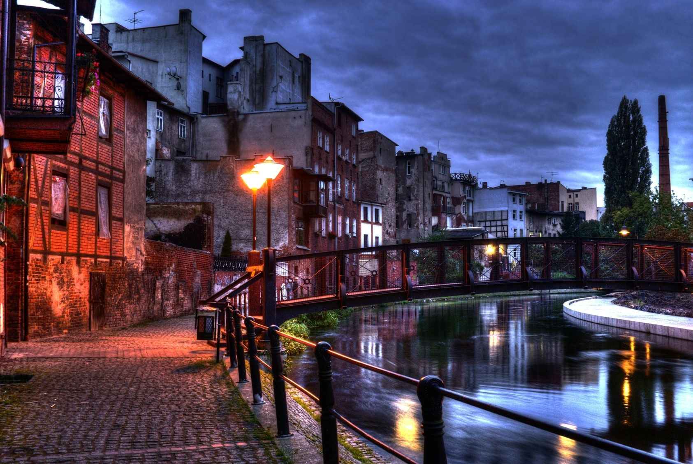
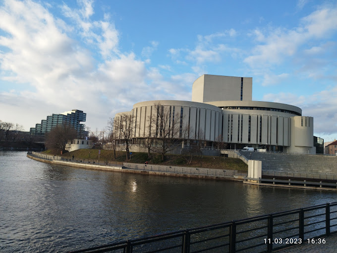
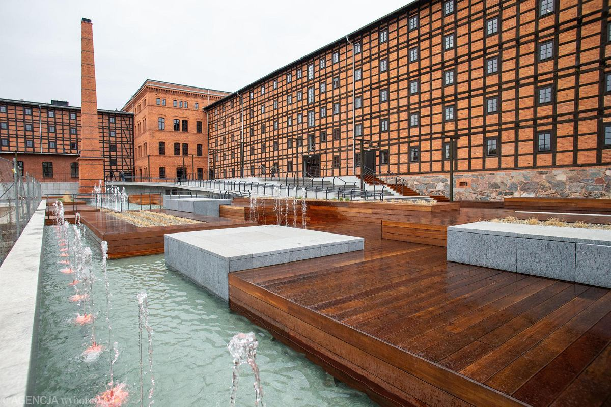

Miasto Turystyczne
Bydgoszcz, położona nad malowniczą Brdą i Kanałem Bydgoskim, przyciąga turystów swoją unikalną architekturą, licznymi muzeami oraz urokliwymi bulwarami nad wodą. Miasto oferuje również różnorodne atrakcje kulturalne, takie jak Operę Nova, Muzeum Mydła i Historii Brudu, a także liczne festiwale i wydarzenia plenerowe, które przyciągają zarówno mieszkańców, jak i odwiedzających.
Miasto niespodzianek
Bydgoszcz jest miastem pełnym ciekawostek, takich jak Fontanna Potop, która jest jednym z najbardziej złożonych i unikatowych zespołów rzeźbiarskich w Polsce. Dodatkowo, miasto może poszczycić się największym w Polsce parkiem miejskim – Leśnym Parkiem Kultury i Wypoczynku Myślęcinek, oferującym liczne atrakcje przyrodnicze i rekreacyjne.
Pocztówka
Wypełnij formularz zgłoszeniowy, aby otrzymać darmową pocztówkę z krajobrazem Bydgoszczy.
Witaj w Bydgoszczy!

Wyspa Młyńska
Zabytkowa wyspa rzeczna w rejonie staromiejskim Bydgoszczy, o powierzchni ok. 6,5 ha, mieszcząca obiekty kulturalne i rekreacyjne, otoczona bulwarami i urządzeniami hydrotechnicznymi. Wyspa otrzymała w 2012 roku Certyfikat Najlepszy Produkt Turystyczny nadany przez Polską Organizację Turystyczną.
Wstęp darmowy

Opera Nova
Teatr operowy, pełniący również rolę teatru muzycznego, zlokalizowany w Bydgoszczy, założony w 1956 r., upaństwowiony w 1960 r. Jest jedną z 10 scen operowych w Polsce oraz jedynym tego typu teatrem na terenie województwa kujawsko-pomorskiego.
Ceny - ok. 120 zł / miejsce

Fontanna Potop
Fontanna, wielofigurowa kompozycja rzeźbiarska istniejąca w latach 1904-1943 i od 2014 w Bydgoszczy. Przez cały okres pierwszego istnienia i obecnie dzieło to jest jedną z atrakcji turystycznych Bydgoszczy.
Wstęp darmowy

Młyny Rothera
Dawne młyny zbożowe położone na Wyspie Młyńskiej w Bydgoszczy. Obecnie obiekt ekspozycyjny z wystawami, salami konferencyjnymi, w którym odbywają się imprezy kulturalne, wystawy, spotkania itp.
Wstęp darmowy
Ciekawostki:
Podczas przebudowy Starego Rynku zaznaczono linię przebiegu osiemnastego południka długości geograficznej wschodniej, którą zakończono zegarem odmierzającym astronomiczny czas bydgoski.
W Muzeum Mydła i historii brudu można własnoręcznie wykonać mydło, wybrać jego kolor i zapach oraz poznać historię mydła od czasów starożytnych i wiele ciekawostek związanych z higieną osobistą w różnych epokach.
Bydgoszcz ma powierzchnię 175,98 km kw. Jest podzielona na 29 osiedli i sześć dzielnic, a według danych Głównego Urzędu Statystycznego, w 2019 roku w Bydgoszczy mieszkało 350 tysięcy osób i pod względem liczby ludności zajmuje 8. miejsce w Polsce.